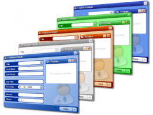

dentro de los contenidos encontrados en esta pagina web podremos observar las definiciones directas de los conceptos escogidos por el estudiante
asi mismo una serie de ejemplos que ilustren de manera clara y concisa lo que se debe dar a entender con una interfaz de usuario y los metodos con
los que el usuario puede tener interaccion directa con el ordenar y su directa repercucion dentro del sitio o aplicativo web.
Interfaz de usuario
La interfaz de usuario es el medio con que el usuario puede comunicarse con una máquina, equipo, computadora o dispositivo, y comprende todos los puntos de contacto entre el usuario y el equipo. Normalmente suelen ser fáciles de entender y fáciles de accionar, aunque en el ámbito de la informática es preferible referirse a que suelen ser "usables", "amigables e intuitivos" porque es complejo.La interfaz de usuario es el espacio donde se producen las interacciones entre seres humanos y máquinas. El objetivo de esta interacción es p permitir el funcionamiento y control más efectivo de la máquina desde la interacción con el humano. Las interfaces básicas de usuario son aquellas que incluyen elementos como menús, ventanas, contenido gráfico, cursor, los beeps y algunos otros sonidos que la computadora hace, y en general, todos aquellos canales por los cuales se permite la comunicación entre el ser humano y la computadora. El objetivo del diseño de una interfaz es producir una interfaz que sea fácil de usar (explicarse por sí misma), eficiente y agradable para que al operar la máquina dé el resultado deseado.

Interaccion Humano Ordenador
La interacción persona-computadora o persona-ordenador (IPO) se podría definir formalmente como: «La disciplina dedicada a diseñar, evaluar e implementar sistemas informáticos interactivos para el uso humano, y a estudiar los fenómenos relacionados más significativos Otra definición, aunque similar, es la que ofrecen Myers, Hollan y Cruz: «El estudio sobre cómo se diseñan, implementan y usan los sistemas informáticos interactivos y la manera que influyen los ordenadores en los individuos, las organizaciones y la sociedad. Estos estudios son una especialización dentro de la ergonomía, el campo multidisciplinar que actúa sobre el diseño de las máquinas y del entorno de trabajo para facilitar su uso y adecuarlo a las condiciones fisiológicas, anatómicas, psicológicas y capacidades del usuario.Referencias
Wikipedia/Interfaz de Usuario/ 2021 / Tomado de: https://es.wikipedia.org/wiki/Interfaz_de_usuarioWikipedia/Interaccion Humano Ordenador/ 2021 / Tomado de: https://es.wikipedia.org/wiki/Interacci%C3%B3n_persona-computadora
mockup